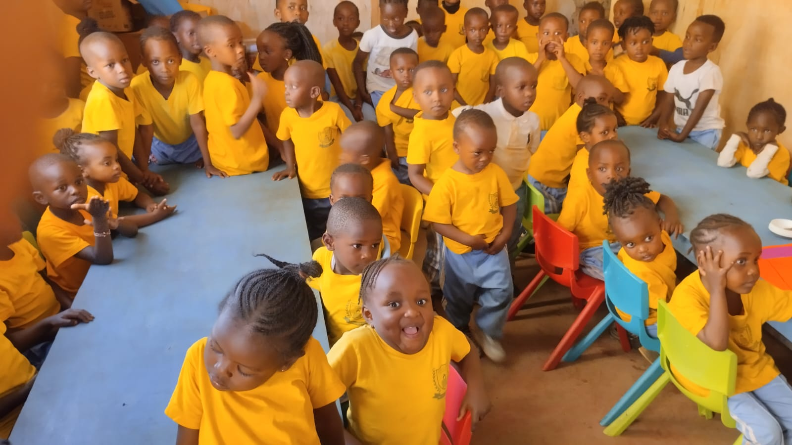

Where every child is known
A small CBC primary school in Njomoko, Thika — giving children the attention, values, and foundation they need to thrive.

A school built on knowing each child
We opened Gracious Love Academy in 2023 with a simple belief: primary school should feel like a second home. In our experience, children learn best when their teachers know them well, when their environment is calm and safe, and when parents are genuinely involved.
We are a small school on purpose. That means your child is not a number. Their name is known. Their struggles are noticed. Their progress is tracked by people who care.
- Teachers who stay with the same cohort, building real relationships
- A structured day with time for play, focused learning, and rest
- Values-based education rooted in honesty, respect, and service
- Regular conversation with parents — not just report cards
How we teach the CBC
We follow the Competency Based Curriculum as designed by KICD, but we teach it at a pace that matches our children.
Play Group, PP1, and PP2 are built around exploration and language. Grade 1 to 3 strengthen literacy and numeracy without rushing. Grade 4 to 6 add depth and leadership. No child is pushed ahead before they are ready.
The people who teach your child
Small school, known teachers. Every child is greeted by name every morning.
What you need to know
Small classes
Maximum 18 children per class. Teachers know each child by name.
Registered & approved
Registered with the Ministry of Education, Kenya. CBC curriculum aligned with KICD standards.
Transport available
We cover routes in Njomoko and nearby areas. Contact us for details.
Classes and stages
From Play Group through Grade 6, each stage is designed for the age and stage of your child.
Early Years — PP1 & PP2
The first years of school set the pattern for everything that follows. Our Early Years program is built around play, conversation, and gentle structure. Children learn to sit with stories, count through games, express themselves, and be confident in a group. By the end of PP2, they are ready for the formal classroom.
- Language and communication through stories and songs
- Numbers and patterns through hands-on play
- Fine motor skills through drawing, cutting, and building
- Social skills through guided group activities
- Rest and quiet time built into every day
Lower Primary — Grade 1 to Grade 3
This is where foundations become strong. Every child reads at their own pace. Every child develops comfort with numbers through daily practice. We keep classes small so no child fades into the background.
- Daily phonics and guided reading
- Practical numeracy from money to measurement
- Creative arts and physical education each week
- Homework that is meaningful, not excessive
- Individual progress checks every term
Upper Primary — Grade 4 to Grade 6
Grade 4 to 6 are about growing into capable, thoughtful young people. Subject areas become more defined. Children take on small responsibilities. They begin to understand what kind of learner they are and what comes next.
- Subject-specific teaching by teachers who know their area
- Leadership opportunities and group projects
- Preparation for junior secondary with confidence
- Regular parent meetings to plan the next step
How to join
The best way to decide is to see the school. Walk through, meet the teacher, and ask questions. We will guide you through the rest.
Book a visit
Call, WhatsApp, or use the form to arrange a time that works for your family.
Come and see
Tour the school, meet the teacher, and ask anything you need to know.
Register
Complete the registration form and pay the admission fee. We will help with every step.
Start
We will confirm your child's start date and what to bring on the first day.
Fee Structure
Fees are payable per term. Payment plans are available for families who need them — please ask at the office.
Download Full Fee StructureSchool life
A look around our classrooms, playground, and the moments that make up a term.


What parents say
Parents who have chosen Gracious Love Academy for their children.
My daughter used to be shy about speaking up. Within weeks at Gracious Love Academy, her teacher noticed and started encouraging her. Now she reads to her little brother at home.
The school called us after three days just to say how our son was settling. That level of care is not something we experienced before. It made us feel like we had made the right choice.
Fees are clear, teachers are reachable, and the school feels like family. Our third child started this term and already loves it.
Common questions
Answers to the questions parents ask most often.
Latest from our school
Updates, events, and moments from around Gracious Love Academy.
Loading updates...
Get in touch
The best way to decide is to visit. We welcome you to walk through the school, meet the teacher, and ask questions.
Saturday: 9:00 AM – 1:00 PM